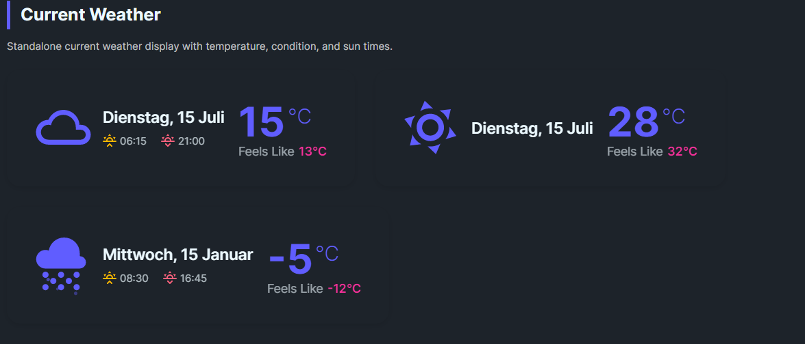

DaisyWeatherCurrent is a standalone widget for showing the current weather state. It features a large animated weather icon, prominent temperature display, and supporting information like "feels like" and sun times.
| Property | Type | Default | Description |
|---|---|---|---|
Temperature |
double |
0 |
Current temperature value |
FeelsLike |
double |
0 |
"Feels like" temperature |
Condition |
WeatherCondition |
Unknown |
Weather condition for icon |
Date |
DateTime |
DateTime.Now |
Date/time of reading |
Sunrise |
TimeSpan |
- | Sunrise time (e.g., 07:33) |
Sunset |
TimeSpan |
- | Sunset time (e.g., 17:20) |
TemperatureUnit |
string |
"C" |
Temperature unit (C or F) |
ShowSunTimes |
bool |
true |
Whether to show sunrise/sunset |
DateFormat |
string |
"dddd, d MMMM" |
Date display format (e.g., "ddd, d MMM" for short) |
Size |
DaisySize |
Medium |
Control size (ExtraSmall, Small, Medium, Large, ExtraLarge) |
<!-- Basic usage -->
<controls:DaisyWeatherCurrent
Temperature="22"
FeelsLike="24"
Condition="Sunny"
TemperatureUnit="C" />
<!-- With sun times -->
<controls:DaisyWeatherCurrent
Temperature="8"
FeelsLike="5"
Condition="PartlyCloudy"
Sunrise="07:33"
Sunset="17:20" />
<!-- Fahrenheit -->
<controls:DaisyWeatherCurrent
Temperature="72"
FeelsLike="75"
Condition="Clear"
TemperatureUnit="F" />
<!-- Hide sun times -->
<controls:DaisyWeatherCurrent
Temperature="15"
Condition="Cloudy"
ShowSunTimes="False" />
<!-- With data binding -->
<controls:DaisyWeatherCurrent
Temperature="{Binding CurrentTemperature}"
FeelsLike="{Binding FeelsLikeTemperature}"
Condition="{Binding CurrentCondition}"
Date="{Binding LastUpdated}"
Sunrise="{Binding SunriseTime}"
Sunset="{Binding SunsetTime}" />The control displays in a three-column layout:
1. Left: Large animated weather condition icon (64px)
2. Center: Date and sun times (sunrise ☀️↑ / sunset ☀️↓)
3. Right: Temperature with unit and "Feels like" value
The control uses theme brushes:
DaisyPrimaryBrushDaisySecondaryBrushDaisyBaseContentBrushDaisyWarningBrushDaisyErrorBrush